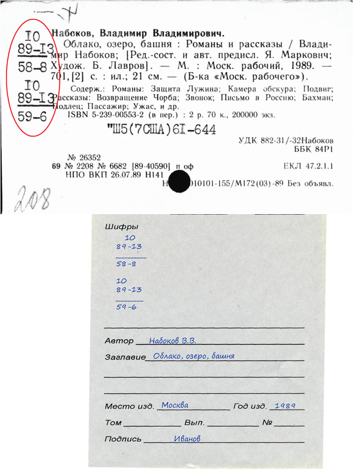

Вы нашли книгу в карточном каталоге:

- заполните читательское требование, его можно взять на пункте приема требований
- В графу шифр вносятся все обозначения указанные на карточке слева
- стандартный срок выполнения заказа – 1,5 часа.
-
Дополнительные услуги:
- Срочный заказ в читальный зал
- Заказ книг по телефону
- Предварительный заказ документов из фонда малоспрашиваемых изданий
Как найти нужный зал?
Список всех залов находится на странице: "Залы Российской Государственной Библиотеки"
Как получить нужную книгу?
Если вы отдали требование на пункт приема заказов, издание будет доставлено в ваш читальный зал (его номер указан на вашем читательском билете) через полтора часа.
Издание заказанное через электронный каталог будет доставлено в ваш читальный зал через 40 минут.
-
Дополнительные услуги:
- Продление литературы
- Копирование изданий